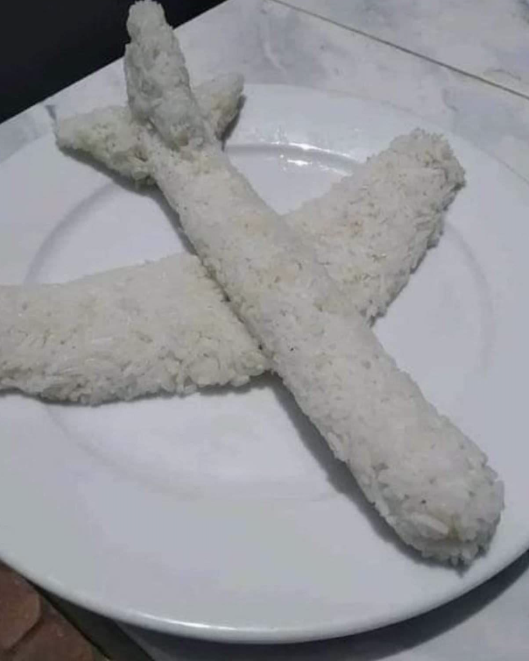

"Onigiri"

Watashi ha onigiri ga daisuki desu!
INGREDIENTS
- Rice
- Furikake
- Nori
- Tsunameyo
- Cheese
STEPS
- トマトは1cm幅に切ります。
- ピクルスは縦に6枚の薄切りにします。
- パン粉に牛乳を入れ、ひたします。
- パテを作ります。ボウルに牛豚合びき肉と塩こしょうを入れて捏ね、粘り気が出てきたら残りのパテの材料を入れて捏ねます。
- 2等分にし、バンズの大きさに合わせて円形に成形し、薄力粉をまぶします。
- 中火で熱したフライパンにサラダ油をひき、5を焼きます。両面に焼き色が付いたらスライスチェダーチーズをのせて蓋をし、弱火で5分程蒸し焼きにします。
- 中まで火が通り、スライスチェダーチーズが溶けたら火から下ろします。
- バンズはオーブントースターで3分程、焼き色がつくまで焼きます。
- 8の下の部分にマスタードを塗り、上の部分にケチャップを塗ります。2、フリルレタス、7、1、紫玉ねぎの順にのせます。上の部分を重ね、お皿に盛りつけて完成です。